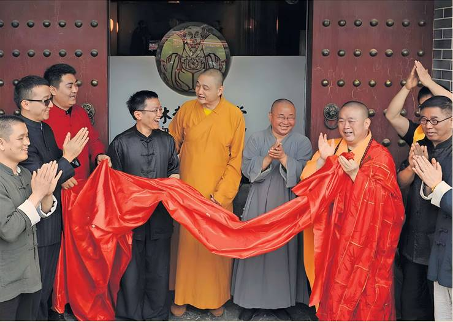
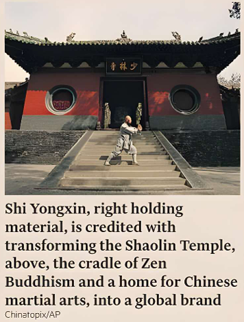

China’s Shaolin Temple has said that its head has been placed under investigation for alleged criminal offences including embezzlement, in the latest controversy to engulf the so-called CEO monk.
Abbot Shi Yongxin has been suspended from his post and placed under “joint investigation from multiple departments,” the temple said in a statement on Sunday. It added that he was suspected of having improper relationships with multiple women and fathering at least one illegitimate child.
“Shi Yongxin is suspected of criminal offences, embezzling project funds and temple assets [and] seriously violating Buddhist precepts,” the statement said.
Given that Shi is suspected of criminal offences, the statement probably refers to official bodies such as the police or China’s religious or anti-corruption authorities.
The Buddhist Association of China yesterday revoked Shi’s clergy certificate, saying in a statement that “his wrongdoings seriously damaged the reputation of the Buddhist community and the image of monks.”
Shi Yongxin could not immediately be reached for comment.
Saffron-robed Shi is credited with transforming the Shaolin Temple, the cradle of Zen Buddhism and a home for Chinese martial arts, into a global brand over the past two decades. But religious adherents have long criticised Shi for what they saw as excessive commercialisation of one of China’s most important Buddhist sites.
He disappeared for several months in 2015 after he was accused of similar charges of improper relationships and embezzlement, but he was cleared two years later. Sunday’s statement by the temple came after days of speculation that Shi was under investigation.
“His wrongdoing seriously damaged the reputation of the Buddhist community and the image of monks.”
Shi has been a high-profile promoter of the 1,500-year-old temple, which is located on the holy Song mountain in central Henan province, since he was appointed abbot in 1999. The temple’s monks are known worldwide for their elaborate fighting systems. Under Shi’s leadership, they formed a troupe that performed for paying audiences, sent disciples to hundreds of Shaolin-associated kung fu academies and meditation centres, and rented out the temple’s name to countless films.
Shi’s keenness on commercial ventures earned him the nickname “CEO monk” from China’s media.
Throughout his career, Shi has met among others Nelson Mandela, Apple chief executive Tim Cook, Queen Elizabeth II, and Henry Kissinger. In February, he met Pope Francis.
The 2015 investigation followed claims he lived an indulgent lifestyle, receiving a Volkswagen SUV as a gift and wearing a robe threaded with gold. He was also criticised over the temple’s role in a planned $380mn kung fu theme park in Australia.
Investigators in Henan province later found he used millions of renminbi donated by one of his disciples to help develop the temple’s interests, and that a fleet of 15 cars was registered to the temple. But Shi had not used temple assets for personal gain, they said. Months earlier, investigators also dismissed allegations that Shi had fathered two children.
In 2011, Shi told the Financial Times that the SUV was a gift from local government as thanks for the tourism revenue generated by the temple, which welcomes millions of visitors a year.
Other items, such as iPads, were also gifts, he said.
William Langley in Guangzhou
Tuesday 29 July 2025